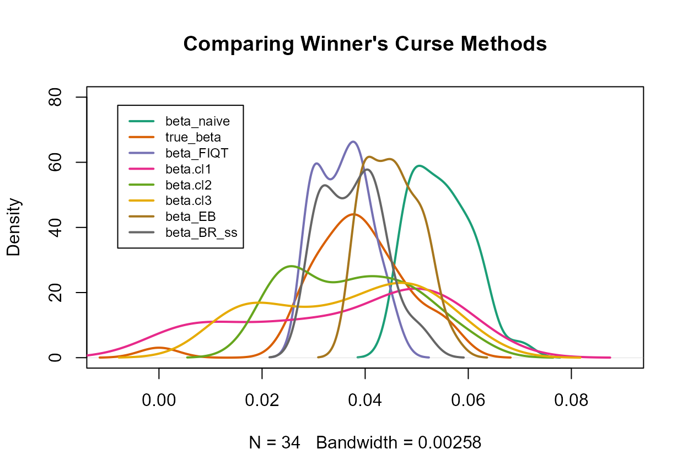

winners_curse_methods.RmdIn order to demonstrate how this package can be used to obtain new adjusted \(\hat\beta\) estimates, we first create a toy data set and subsequently, illustrate how a user could engage with each of the package’s functions using this data set. The methods currently available for implementation are:
An important feature which distinguishes these four methods is detailed in the table below:
| Adjusts \(\beta\) estimate of only SNPs with \(p\)-values less than specified threshold, \(\alpha\) | Adjusts \(\beta\) estimate of all SNPs |
|---|---|
|
|
We wish to generate summary statistics for 1 million SNPs, in which there exists a polygenic background of 10,000 SNPs while all others have no effects.
We specify:
With these specifications, we can obtain quite realistic summary statistics as shown below.
The summary statistics have been arranged here in a suitable way
for each method - in the form of a data frame with columns
rsid, beta and
se.
set.seed(1998)
n_snps <- 10^6
n_samples <- 30000
effect_snps <- 0.01*n_snps
maf <- runif(n_snps,0.01,0.5)
true_beta <- rnorm(effect_snps,0,1)
h2 <- 0.7 # variance explained by effect SNPs
var_y <- sum(2*maf[1:effect_snps]*(1-maf[1:effect_snps])*true_beta^2)/h2
true_beta <- true_beta/sqrt(var_y) # scaling to represent a phenotype with variance 1
true_beta <- c(true_beta, rep(0,n_snps-effect_snps))
se <- sqrt((1 - 2*maf*(1-maf)*true_beta^2)/(2*(n_samples-2)*maf*(1-maf)))
summary_stats <- data.frame(rsid=seq(1,n_snps),beta=rnorm(n=n_snps,mean=true_beta,sd=se),se=se)
head(summary_stats)
#> rsid beta se
#> 1 1 -0.014621777 0.024816486
#> 2 2 0.003693032 0.011860650
#> 3 3 -0.056895857 0.021248869
#> 4 4 -0.023764922 0.025252738
#> 5 5 0.028410276 0.008177783
#> 6 6 -0.001963061 0.009937206The function conditional_likelihood requires a data
frame, in the form described above, and a value for alpha,
the significance threshold used in the GWAS. Note that all columns of
the data frame must contain numerical values and each row must represent
a unique SNP, identified by rsid.
As the conditional likelihood methods have been designed to be
only used for SNPs which are deemed significant, the data frame returned
contains only SNPs that have \(p\)-values below the inputted genome-wide
significance threshold value, alpha.
Note: If the -statistic of a particular SNP is greater than 100, then merely the original naive estimate will be outputted for the second form of the adjusted estimate, namely , for that SNP.
If no SNPs are detected as significant, the function returns a
warning message:
WARNING: There are no significant SNPs at this threshold.
The returned data frame has SNPs ordered based on their \(p\)-values from smallest to largest, or equivalently, in descending order of \(\mid z \mid\) in which \(z\) is the estimated value for \(\beta\) divided by its standard error.
We implement the function on our toy data set as follows,
choosing a significance threshold of 5e-8:
out_CL <- conditional_likelihood(summary_data = summary_stats, alpha = 5e-8)
head(out_CL)
#> rsid beta se beta.cl1 beta.cl2 beta.cl3
#> 1 3965 0.06064760 0.008191123 0.06007537 0.05868216 0.05937877
#> 2 7815 0.06273204 0.008477889 0.06213363 0.06068292 0.06140827
#> 3 4998 -0.05956742 0.008336576 -0.05853885 -0.05655174 -0.05754529
#> 4 7261 0.05510736 0.008186396 0.05271740 0.04940315 0.05106028
#> 5 6510 0.05623389 0.008389116 0.05363848 0.05011923 0.05187885
#> 6 9917 0.05466029 0.008176299 0.05203604 0.04852832 0.05028218Three columns have been added to the right of the inputted data
frame: each represents a correction method suggested in Ghosh
et al. (2008). The first, beta.cl1, is
referred to as the conditional MLE while the second,
beta.cl2, is the mean of the normalized conditional
likelihood. The third, beta.cl3 is merely the average of
the first two, known as the compromise estimator.
Ghosh et al. (2008) noted that for instances in which
the true \(\beta\) value is close to
zero, beta.cl2 often has greater mean squared error than
beta.cl1 but for true \(\beta\) values further from zero,
beta.cl2 performs better. Thus, it was suggested that
beta.cl3 be used to combine the strengths of these two
estimators. However, this function, conditional_likelihood,
outputs values for all three estimators in order to allow the user to
make their own decision on which they believe to be the most
appropriate.
The function empirical_bayes implements the
Empirical Bayes method for correcting for Winner’s Curse, detailed in Ferguson
et al. (2013), with a slight modification.
The function has two arguments with the first being
summary_data, the data frame containing rsid,
beta and se columns. Again, all columns of the
data frame must contain numerical values and each row must represent a
unique SNP, identified by rsid. In addition, the function
requires that the data frame must contain at least 50 rows corresponding
to 50 unique SNPs. This requirement is included as the Empirical Bayes
method performs poorly when only data of a small number of SNPs is
available. The second argument, method, is a string
parameter which allows the user to choose what modelling approach to
take for the purpose of estimating the log density function. The default
setting is method="AIC", which is the current published
method. Other options include method="fix_df",
method="scam", method="gam_nb" and
method="gam_po". If method="fix_df", the
degrees of freedom is set to 7. The other three options all enforce
additional constraints on the shape of the estimated log density
function by i) fitting a generalized additive model (GAM), with
integrated smoothness estimation, (method="gam_nb" and
method="gam_po") and ii) applying two shape constrained
additive models (SCAMs) (method="scam").
It returns the above described data frame but with a fourth
column, beta_EB in which the adjusted estimates of this
procedure have been added.
As the Empirical Bayes method makes adjustments to all SNPs, not only those that have been considered significant, this data frame contains all SNPs.
Note: The conditional likelihood methods adjust
each statistic one at a time, and so summary statistics of one
individual SNP can easily be inputted into the
conditional_likelihood function. However, the Empirical
Bayes method requires many SNPs as the more information given to the
function, the more accurate it will be at modelling the distribution and
thus, making adjustments. Thus, as mentioned above,
summary_data must contain information related to more than
50 SNPs.
Below is a demonstration of using empirical_bayes
with our toy data set with the default setting for
method:
out_EB <- empirical_bayes(summary_data = summary_stats)
head(out_EB)
#> rsid beta se beta_EB
#> 1 3965 0.06064760 0.008191123 0.05177699
#> 2 7815 0.06273204 0.008477889 0.05355088
#> 3 4998 -0.05956742 0.008336576 -0.05107993
#> 4 7261 0.05510736 0.008186396 0.04624187
#> 5 6510 0.05623389 0.008389116 0.04714887
#> 6 9917 0.05466029 0.008176299 0.04580573Unfortunately, the Empirical Bayes estimator described by Ferguson et al. (2013) is known to perform poorly in the extreme tails of the distribution. Therefore, it is quite possible that a lack of adjustment for the \(\beta\) values of SNPs with the most extreme \(z\)-statistics could be witnessed with this method. A somewhat ad hoc approach to overcome this issue of combining the Empirical Bayes and the conditional likelihood methods was suggested by Ferguson et al. (2013).
In order to ensure that shrinkage does occur for the \(\beta\) values of these extreme SNPs, it
was decided that the following modification would be added to the
empirical_bayes function detailed here. The basis function
of the natural cubic spline has been altered so that the boundary knots
are no longer the most extreme \(z\)-values. Instead, the lower boundary
knot is defined as the \(10^{\text{th}}\) \(z\)-statistic when the \(z\)-statistics lie in increasing order
while the upper boundary knot is the \(10^{\text{th}}\) \(z\)-statistic when the \(z\)-statistics have been arranged in
decreasing order. The natural cubic spline is then merely linear beyond
these boundary knots. This assists in fixing the ‘tails’ issue discussed
above. We see that the reduction of the estimated \(\beta\) values for all of the top 6 most
significant SNPs has occurred.
The function FDR_IQT implements the winner’s curse
adjustment method detailed in Bigdeli
et al. (2016).
Similar to the approaches above, the function requires a data
frame with three columns rsid, beta and
se, all columns of the data frame must contain numerical
values and each row must represent a unique SNP, identified by
rsid.
It also has an argument min_pval, for which the
default setting is 1e-15. This is included in order to
avoid zero \(p\)-values which can prove
problematic for the function when evaluating qnorm().
Furthermore, due to the nature of winner’s curse, it is in fact rare
that observations with \(\mid z \mid >
8\) are biased.
However, through the third argument method, this
function also provides the user with an option to use an alternative
form of FDR Inverse Quantile Transformation which will adjust the effect
sizes of all SNPs, not only those that have \(p\)-values greater than 1e-15.
The default setting is method="original" while our modified
version of the method can be executed using
method="alt".
\(~\)
Alternative method description:
As mentioned above, the current published definition of FDR
Inverse Quantile Transformation contains the clause that if a certain
SNP has a \(p\)-value which equates to
0 or indeed a \(p\)-value less than
1e-15, then the association estimate of this SNP will not
be adjusted. This motivated us to explore a way in which we could obtain
adjusted estimates for these SNPs with very small \(p\)-values or equivalently, very large
\(z\)-statistics.
It is possible to prove that for all \(z > 0\), the following identity holds: \(P(N(0,1) > z) \le \frac{e^-{\frac{z^2}{2}}}{z\sqrt{2\pi}}\). However, \(\frac{\frac{e^-{\frac{z^2}{2}}}{z\sqrt{2\pi}}}{P(N(0,1) > z)} \rightarrow 1\) as \(z \rightarrow \infty\), and therefore, we can in fact use the following as an approximation to \(2 \times P(N(0,1) > |z|)\) for large \(z\): \[2 \times \frac{e^{-\frac{|z|^2}{2}}}{|z|\sqrt{2\pi}}\]
Thus, using this identity, we established an alternative form of
FDR IQT in which adjustments can be made to the \(z\)-statistics of all SNPs, including those
with \(p\)-values less than
1e-15. Our proposed alternative method first replaces the
current \(p\)-values of those SNPs with
very small \(p\)-values with substitute
\(p\)-values using the above equation.
Following this, in a similar manner to the original method, the function
p.adjust is applied to all \(p\)-values. Corresponding adjusted \(z\)-statistics are then obtained for each
SNP using the qnorm function. Our method then creates a
look-up table which includes \(z\)-statistics ranging from a value of 8 up
to the minimum positive integer that is greater than the maximum \(z\)-statistic of the data set at hand, at
increments of 0.0001. For each \(z\)-statistic, an approximate \(p\)-value is obtained using the equation:
\(2 \times
\frac{e^{-\frac{|z|^2}{2}}}{|z|\sqrt{2\pi}}\). For those adjusted
\(z\)-statistics which have been
computed as equating to infinity, this look-up table is used along with
the adjusted \(p\)-values in order to
obtain a more suitable value for the adjusted \(z\)-statistic. Thus, in contrast to the
original definition, these SNPs with very large \(z\)-statistics now have been provided with
values for adjusted \(z\)-statistics.
\(~\)
beta_FIQT, and again, the SNPs have been reordered
according to their individual \(z\)-statistics.
out_FIQT <- FDR_IQT(summary_data = summary_stats)
head(out_FIQT)
#> rsid beta se beta_FIQT
#> 1 3965 0.06064760 0.008191123 0.04419398
#> 2 7815 0.06273204 0.008477889 0.04574119
#> 3 4998 -0.05956742 0.008336576 -0.04271559
#> 4 7261 0.05510736 0.008186396 0.03781859
#> 5 6510 0.05623389 0.008389116 0.03875509
#> 6 9917 0.05466029 0.008176299 0.03777195Inspired by the bootstrap resampling method detailed in Faye
et al. (2011), the function BR_ss implements a
similar approach which can be easily applied to published sets of GWAS
summary statistics without the requirement of access to original
individual-level data. The major advantage of our alternative suggested
method is the considerable improvement in computational efficiency, with
a reasonably low level of conceptual difficulty being
maintained.
BR_ss takes a data frame summary_data
with three columns: rsid, beta,
se, and returns the inputted data frame along with the
adjusted estimate for \(\beta\),
beta_BR_ss. Note that all columns of the data frame,
summary data must contain numerical values, each row must
represent a unique SNP, identified by rsid and the function
requires that there must be at least 5 unique SNPs so that the smoothing
spline can be implemented successfully. The function also has a logical
parameter seed_opt which can be set to TRUE by
the user to permit reproducibility. Its default setting is
seed_opt=FALSE. As this method involves bootstrap
implementation, the use of a seed can allow the user to obtain the exact
same results for beta_BR_ss when running the function many
times on the same dataset. The parameter seed provides the
user with an option to set their desired value for the seed when using
seed_opt=TRUE. The default for seed is the
arbitrary value of 1998.
\(~\)
Method description:
This procedure begins with arranging all \(N\) SNPs according to their original \(z\)-statistics, \(z_i = \frac{\hat\beta_i}{\hat{\text{se}(\hat\beta_i)}}\), in descending order. A randomized estimate of the extent of ranking bias for the \(k^{th}\) largest \(z\)-statistic is calculated by means of the parametric bootstrap as follows:
A value \(\hat\beta_i^{\text{b}}\) is simulated for SNP \(i, i=1,...,N\), independently, from a Gaussian distribution with mean \(\hat\beta_i\) and standard deviation \(\hat{\text{se}(\hat\beta_i)}\), i.e. \[\hat\beta_i^{\text{b}} \sim N(\hat\beta_i, \hat{\text{se}(\hat\beta_i)}).\]
Upon obtaining \(\hat\beta_i^{\text{b}}\) for \(i, i=1,...,N\), the SNPs are subjected to an ordering in which they are arranged based on their \(z_i^{\text{b}}\)-statistics, in descending order. The \(z_i^{\text{b}}\)-statistic of SNP \(i\) is defined as \[z_i^{\text{b}} = \frac{\hat\beta_i^{\text{b}}}{\hat{\text{se}(\hat\beta_i)}}.\]Due to this ordering, each SNP is assigned a rank \(A(k)\). Equivalently, we define \(A(k)\) as the index corresponding to the \(k^{th}\) largest entry in the vector: \([z_1^{\text{b}}, ..., z_N^{\text{b}}] = [\frac{\hat\beta_1^{\text{b}}}{\hat{\text{se}(\hat\beta_1)}}, ..., \frac{\hat\beta_N^{\text{b}}}{\hat{\text{se}(\hat\beta_N)}}]\).
Then, the estimated bias of SNP \(k\), the SNP with the \(k^{th}\) largest original \(z\)-statistic, takes the following form: \[\text{bias}_k = \frac{\hat\beta_{A(k)}^{\text{b}}- \hat\beta_{A(k)}^{\text{oob}}}{\hat{\text{se}(\hat\beta_{A(k)})}} = \frac{\hat\beta_{A(k)}^{\text{b}}- \hat\beta_{A(k)}}{\hat{\text{se}(\hat\beta_{A(k)})}},\]in which \(\hat\beta_{A(k)}^{\text{b}}\) is the bootstrap value of the SNP ranked in position \(k\) in the ordering of \(z_i^{\text{b}}\)-statistics, \(\hat\beta_{A(k)}^{\text{oob}} = \hat\beta_{A(k)}\) is that same SNP’s original \(\beta\) estimate and \(\hat{\text{se}(\hat\beta_{A(k)})}\) its standard error.
In the next step of the process, a cubic smoothing spline is fitted to the data in which the \(z\)-statistics are considered as the inputs and \(\text{bias}_k\), their corresponding outputs. The predicted values from this model fitting provides new estimates for the bias correction, \(\text{bias}_k^*\) for each SNP. This additional stage in which \(\text{bias}_k^*\) is obtained eliminates the need for more than one bootstrap iteration for each SNP in order to ensure competitive performance of the method. This results in a faster approach with increased accuracy.
Finally, the new estimate for the true effect size of SNP k, the SNP with the kth largest original z-statistic, is defined as \(\hat\beta_k^* = \hat\beta_k - \hat{\text{se}(\hat\beta_k)} \cdot \text{bias}_k^*\).
out_BR_ss <- BR_ss(summary_data = summary_stats, seed=2020)
head(out_BR_ss)
#> rsid beta se beta_BR_ss
#> 1 3965 0.06064760 0.008191123 0.04959912
#> 2 7815 0.06273204 0.008477889 0.05128017
#> 3 4998 -0.05956742 0.008336576 -0.04600100
#> 4 7261 0.05510736 0.008186396 0.04168222
#> 5 6510 0.05623389 0.008389116 0.04237417
#> 6 9917 0.05466029 0.008176299 0.04108921As we have simulated our data set, we have the ability to quantify
the amount of bias present in the original naive \(\beta\) estimates and also, in our adjusted
estimates for each method. We can use measures such as the sum of
squared differences (sq_diff) and mean of absolute
differences (mean_abs_diff) to assess this bias.
Furthermore, we can also simply obtain the fraction of SNPs which are
now less biased after adjustment (frac_less_bias).
These three evaluation metrics can be be mathematically defined as
follows, in which there are \(n\)
significant SNPs:
sq_diff \(= \sum_{i=1}^n
(\beta_i - \hat\beta_{\text{adj},i})^2\)
mean_abs_diff \(= \frac{1}{n}
\sum_{i=1}^n |\beta_i - \hat\beta_{\text{adj},i}|\)
frac_less_bias \(=
\frac{1}{n} \sum_{i=1}^n \text{I} \{ |\beta_i - \hat\beta_{i}| \gt
|\beta_i - \hat\beta_{\text{adj},i}| \}\)
First, we take a look at the conditional likelihood method as follows, in which only SNPs that are originally deemed significant are included:
sq_diff_1 <- data.frame(naive = sum((true_beta[out_CL$rsid] - out_CL$beta)^2), beta.cl1 = sum((true_beta[out_CL$rsid] - out_CL$beta.cl1)^2), beta.cl2 = sum((true_beta[out_CL$rsid] - out_CL$beta.cl2)^2), beta.cl3 = sum((true_beta[out_CL$rsid] - out_CL$beta.cl3)^2))
sq_diff_1
#> naive beta.cl1 beta.cl2 beta.cl3
#> 1 0.01315265 0.01096133 0.004872073 0.00726706
mean_abs_diff_1 <- data.frame(naive = mean(abs(true_beta[out_CL$rsid] - out_CL$beta)), beta.cl1 = mean(abs(true_beta[out_CL$rsid] - out_CL$beta.cl1)), beta.cl2 = mean(abs(true_beta[out_CL$rsid] - out_CL$beta.cl2)), beta.cl3 = mean(abs(true_beta[out_CL$rsid] - out_CL$beta.cl3)))
mean_abs_diff_1
#> naive beta.cl1 beta.cl2 beta.cl3
#> 1 0.01655319 0.01495558 0.009610264 0.01212566
frac_less_bias_1 <- data.frame(beta.cl1 = (sum(abs(true_beta[out_CL$rsid] - out_CL$beta) > abs(true_beta[out_CL$rsid] - out_CL$beta.cl1)))/nrow(out_CL), beta.cl2 = (sum(abs(true_beta[out_CL$rsid] - out_CL$beta) > abs(true_beta[out_CL$rsid] - out_CL$beta.cl2)))/nrow(out_CL), beta.cl3 = (sum(abs(true_beta[out_CL$rsid] - out_CL$beta) > abs(true_beta[out_CL$rsid] - out_CL$beta.cl3)))/nrow(out_CL))
frac_less_bias_1
#> beta.cl1 beta.cl2 beta.cl3
#> 1 0.6176471 0.8235294 0.7352941For the first two quantities, the values for all three conditional likelihood methods are less than that of the naive estimate and we find that at least 62% of the significant SNPs are now less biased.
Next, we investigate the other three methods described above which take into account all SNPs, not just those with \(p\)-values less than a specified threshold. Thus, when computing the values below, \(n\) is now equal to the total number of SNPs, i.e. \(n = 1,000,000\).
sq_diff_2 <- data.frame(naive = sum((true_beta[out_EB$rsid] - out_EB$beta)^2), beta_EB = sum((true_beta[out_EB$rsid] - out_EB$beta_EB)^2), beta_FIQT = sum((true_beta[out_FIQT$rsid] - out_FIQT$beta_FIQT)^2), beta_BR_ss = sum((true_beta[out_BR_ss$rsid] - out_BR_ss$beta_BR_ss)^2))
sq_diff_2
#> naive beta_EB beta_FIQT beta_BR_ss
#> 1 155.8238 1.840651 1.867272 15.13993
mean_abs_diff_2 <- data.frame(naive = mean(abs(true_beta[out_EB$rsid] - out_EB$beta)), beta_EB = mean(abs(true_beta[out_EB$rsid] - out_EB$beta_EB)), beta_FIQT = mean(abs(true_beta[out_FIQT$rsid] - out_FIQT$beta_FIQT)), beta_BR_ss = mean(abs(true_beta[out_BR_ss$rsid] - out_BR_ss$beta_BR_ss)))
mean_abs_diff_2
#> naive beta_EB beta_FIQT beta_BR_ss
#> 1 0.009104013 0.0002067548 0.0002557587 0.002778236
frac_less_bias_2 <- data.frame(beta_EB = (sum(abs(true_beta[out_EB$rsid] - out_EB$beta) > abs(true_beta[out_EB$rsid] - out_EB$beta_EB)))/nrow(out_EB), beta_FIQT = (sum(abs(true_beta[out_FIQT$rsid] - out_FIQT$beta) > abs(true_beta[out_FIQT$rsid] - out_FIQT$beta_FIQT)))/nrow(out_FIQT), beta_BR_ss = (sum(abs(true_beta[out_BR_ss$rsid] - out_BR_ss$beta) > abs(true_beta[out_BR_ss$rsid] - out_BR_ss$beta_BR_ss)))/nrow(out_BR_ss))
frac_less_bias_2
#> beta_EB beta_FIQT beta_BR_ss
#> 1 0.991785 0.994367 0.994128Again, we see that in the top two cases, the value associated with the naive estimate is greatest. This assures us that the new adjusted estimates provided by each method are indeed less biased than the original \(\beta\) estimate. In fact, for each method, at least 99% of the association estimates of all SNPs are now less biased.
Finally, we can compare the performance of all methods for the SNPs
with raw \(p\)-values less than
5e-8.
out_EB_sig <- out_EB[2*(1-pnorm(abs(out_EB$beta/out_EB$se))) < 5e-8,]
out_FIQT_sig <- out_FIQT[2*(1-pnorm(abs(out_FIQT$beta/out_FIQT$se))) < 5e-8,]
out_BR_ss_sig <- out_BR_ss[2*(1-pnorm(abs(out_BR_ss$beta/out_BR_ss$se))) < 5e-8,]
sq_diff_3 <- data.frame(naive = sum((true_beta[out_CL$rsid] - out_CL$beta)^2), beta.cl1 = sum((true_beta[out_CL$rsid] - out_CL$beta.cl1)^2), beta.cl2 = sum((true_beta[out_CL$rsid] - out_CL$beta.cl2)^2), beta.cl3 = sum((true_beta[out_CL$rsid] - out_CL$beta.cl3)^2), beta_EB = sum((true_beta[out_EB_sig$rsid] - out_EB_sig$beta_EB)^2), beta_FIQT = sum((true_beta[out_FIQT_sig$rsid] - out_FIQT_sig$beta_FIQT)^2), beta_BR_ss = sum((true_beta[out_BR_ss_sig$rsid] - out_BR_ss_sig$beta_BR_ss)^2))
sq_diff_3
#> naive beta.cl1 beta.cl2 beta.cl3 beta_EB beta_FIQT
#> 1 0.01315265 0.01096133 0.004872073 0.00726706 0.005337383 0.003633531
#> beta_BR_ss
#> 1 0.003402189
mean_abs_diff_3 <- data.frame(naive = mean(abs(true_beta[out_CL$rsid] - out_CL$beta)), beta.cl1 = mean(abs(true_beta[out_CL$rsid] - out_CL$beta.cl1)), beta.cl2 = mean(abs(true_beta[out_CL$rsid] - out_CL$beta.cl2)), beta.cl3 = mean(abs(true_beta[out_CL$rsid] - out_CL$beta.cl3)), beta_EB = mean(abs(true_beta[out_EB_sig$rsid] - out_EB_sig$beta_EB)), beta_FIQT = mean(abs(true_beta[out_FIQT_sig$rsid] - out_FIQT_sig$beta_FIQT)), beta_BR_ss = mean(abs(true_beta[out_BR_ss_sig$rsid] - out_BR_ss_sig$beta_BR_ss)))
mean_abs_diff_3
#> naive beta.cl1 beta.cl2 beta.cl3 beta_EB beta_FIQT
#> 1 0.01655319 0.01495558 0.009610264 0.01212566 0.009245785 0.007019747
#> beta_BR_ss
#> 1 0.006709485
frac_less_bias_3 <- data.frame(beta.cl1 = (sum(abs(true_beta[out_CL$rsid] - out_CL$beta) > abs(true_beta[out_CL$rsid] - out_CL$beta.cl1)))/nrow(out_CL), beta.cl2 = (sum(abs(true_beta[out_CL$rsid] - out_CL$beta) > abs(true_beta[out_CL$rsid] - out_CL$beta.cl2)))/nrow(out_CL), beta.cl3 = (sum(abs(true_beta[out_CL$rsid] - out_CL$beta) > abs(true_beta[out_CL$rsid] - out_CL$beta.cl3)))/nrow(out_CL), beta_EB = (sum(abs(true_beta[out_EB_sig$rsid] - out_EB_sig$beta) > abs(true_beta[out_EB_sig$rsid] - out_EB_sig$beta_EB)))/nrow(out_EB_sig), beta_FIQT = (sum(abs(true_beta[out_FIQT_sig$rsid] - out_FIQT_sig$beta) > abs(true_beta[out_FIQT_sig$rsid] - out_FIQT_sig$beta_FIQT)))/nrow(out_FIQT_sig), beta_BR_ss = (sum(abs(true_beta[out_BR_ss_sig$rsid] - out_BR_ss_sig$beta) > abs(true_beta[out_BR_ss_sig$rsid] - out_BR_ss_sig$beta_BR_ss)))/nrow(out_BR_ss_sig))
frac_less_bias_3
#> beta.cl1 beta.cl2 beta.cl3 beta_EB beta_FIQT beta_BR_ss
#> 1 0.6176471 0.8235294 0.7352941 0.8823529 0.8529412 0.8529412\(~\) \(~\)
In addition, we can gain a visual insight into the adjustments made
by these functions by plotting the adjusted absolute values
along with the naive estimates and the true absolute \(\beta\) values of SNPs which are originally
deemed as significant, i.e. those with raw \(p\)-values less than 5e-8, as
follows:
library("RColorBrewer")
col <- brewer.pal(8,"Dark2")
plot(density(abs(out_EB_sig$beta)),ylim=c(0,80),xlim=c(-0.01,0.09),main="Comparing Winner's Curse Methods",col=col[1],lwd=2)
lines(density(abs(true_beta[out_CL$rsid])),col=col[2],lwd=2)
lines(density(abs(out_FIQT_sig$beta_FIQT)),col=col[3],lwd=2)
lines(density(abs(out_CL$beta.cl1)),col=col[4],lwd=2)
lines(density(abs(out_CL$beta.cl2)),col=col[5],lwd=2)
lines(density(abs(out_CL$beta.cl3)),col=col[6],lwd=2)
lines(density(abs(out_EB_sig$beta_EB)),col=col[7],lwd=2)
lines(density(abs(out_BR_ss_sig$beta_BR_ss)),col=col[8],lwd=2)
legend(-0.008, 77.5, legend=c("beta_naive", "true_beta","beta_FIQT","beta.cl1","beta.cl2","beta.cl3","beta_EB", "beta_BR_ss"),
col=col,lty=1,lwd=2,cex=0.75)
\(~\) \(~\)